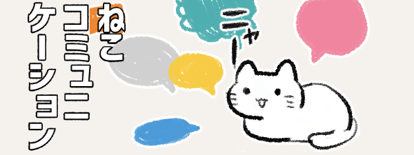

人は言葉や身振り手振りなどを使って気持ちや考えを伝え合う
コミュニケーションをとっています。


では、ねこはどんな方法でコミュニケーションをとっているのでしょう？

ネコにとっていちばん大切なコミュニケーションの方法は
体を使うこと。

しっぽや耳の動きでも「今の気持ち」を伝えます。

ねこ同士が出会ったときには、おたがいのにおいをかぎ合ってあいさつします。

自分のナワバリを伝えるときやあいさつをするときは
においをつけたりかいだりするのがキホンです。

そして、人と比べて何万倍も鼻するどいネコにとって、においは大事な情報。

また、ねこのニャーというなき声は、ねこ同士で使うことはあまりありません。

ネコが鳴き声を使うのは、主に次の3つ。

子ネコのとき
母ネコに「お腹がすいた」などを伝える
母ネコに「お腹がすいた」などを伝える

ケンカやいかくのとき
相手を遠ざける。
相手を遠ざける。

人に話しかけるとき
家ねこに見られる。「ごはん」「かまって」といったお願いを伝える。
家ねこに見られる。「ごはん」「かまって」といったお願いを伝える。

こうしてみると、ケンカや要求以外ではなく以外でのコミュニケーションのようです。

言葉ではなく、においやサインで状況が把握できるねこは、
気持ちや状況を人とは違った感覚として受け取っているのかも。